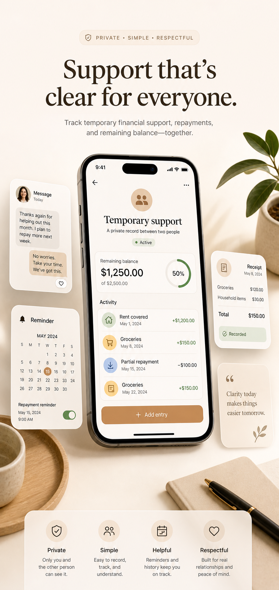
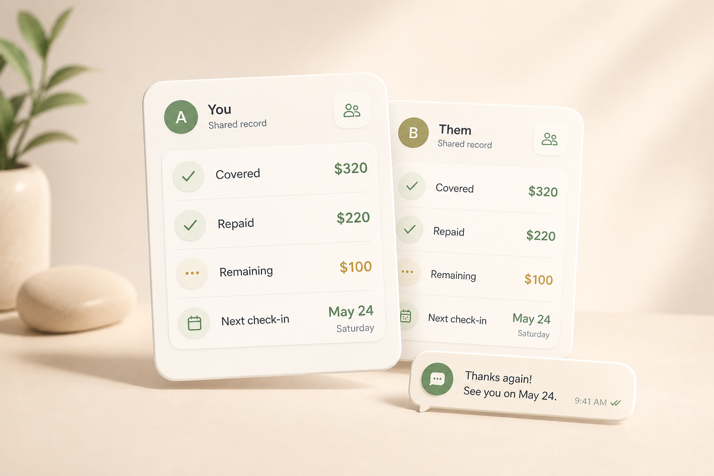

Temporary financial support
Temporary Financial Support Tracker
When someone covers a bill, helps with rent, pays for groceries, or supports you through an uneven month, the details can get hard to remember. You Owe Me keeps the amount, history, repayments, reminders, and next message clear without turning the situation into a formal debt conversation.
You Owe Me does not lend money or process payments. It helps you track and communicate about support already arranged between people you know.
Works offline • No mandatory sign-up • Face ID / Touch ID lock

Support between people can be simple until it continues
Temporary support often starts naturally. A parent covers rent for a month. A partner pays more while income is delayed. A friend covers a bill. A roommate pays your share temporarily. A sibling helps with groceries. In the moment, everyone understands what happened. Later, the details can become harder to remember.
If you already know the amount and want to repay it in steps, use the Payment Plan Calculator to create a simple weekly, biweekly, or monthly schedule before saving the plan in You Owe Me.
The problem is usually not bad intentions. It is that real life creates details: dates, amounts, partial repayments, changed timing, notes, receipts, and different memories of what was agreed.
What You Owe Me is and what it is not
You Owe Me is a private clarity layer for temporary financial support between people. It gives real-life support, repayments, notes, and updates one calm place to live.
You Owe Me helps you track
- Support already arranged between people
- Bills covered, money lent, money borrowed, or repayments
- One running balance with each person
- Notes, dates, reminders, and repayment updates
- Clear summaries when both people need context
You Owe Me does not provide
- Loans or credit
- Loan approval
- Cash advances
- Payment transfers
- Lender matching
- Debt collection or repayment enforcement
- Legal, tax, or financial advice
It is a private record and communication app for money situations you already have with people you know.
If your main problem is an overdue balance or a follow-up message, the app to track money owed page may be the better starting point.
Support is not always a loan
Some support is a gift. Some is meant to be repaid. Some is flexible: “pay me back when you can,” “cover the next bill,” or “send updates until things are settled.” You Owe Me is useful only for the parts both people want to keep clear.
The app does not decide what the arrangement should be. It gives the details a private place to live once people have already agreed what they want to track.
A clear record protects both sides
A clear record gives both people the same memory of what happened. It reduces guessing, avoids repeated explanations, and makes repayment updates easier when timing changes.
Instead of relying on old messages, screenshots, or memory, You Owe Me keeps the important context together: what was covered, when it happened, what has been repaid, what remains open, and what should happen next.
What stays clear
Shared clarity is not evidence against someone. It is a calm record of support, repayments, and context both people can understand.
- Who helped whom
- What was covered
- Date and amount
- Gift, loan, partial gift, or flexible support
- Repayment expectation
- Partial repayments
- Remaining balance
- Next check-in or reminder
- Notes and context

If someone helped you and you want to stay organized
Receiving support does not have to mean keeping everything in your head. You can save what happened, add the reason, track partial repayments, and send updates before the other person has to ask.
You Owe Me helps you stay responsible without making the situation feel cold or formal.
If someone already paid part and the rest is still open, read how to follow up after a partial repayment for calm wording and timing.
Save the support while it is clear
Record the amount, date, reason, and person while the details are still fresh.
Repay in steps
Log partial repayments as they happen and always see what remains open.
Send calm updates
Use the real balance and history to explain what you paid, what remains, or when you need more time.
Set your own reminders
Remember the next repayment or check-in without waiting for someone else to bring it up.
If you covered something and want clarity without pressure
When you help someone close, you may not want to chase them, question them, or make the relationship feel transactional. But you may still need a clear record.
You Owe Me lets you keep the details organized without turning support into a formal debt conversation.
After money arrives, the Repayment Receipt Generator can help confirm what was paid, what it covered, and what remains.
One balance with one person
Keep support, repayments, and related notes in one running history instead of scattered messages.
Separate important arrangements
Use Loan Records when one support arrangement needs its own clear place.
Share context when needed
Use Live Link or statements when the other person needs to see the current record.
Confirm repayments clearly
Use repayment receipts to show what was paid, what it covered, and what remains open.
How temporary support can look in real life
Parent helps with rent
Maya's parent covers $600 rent and $120 groceries during a difficult month. Maya plans to repay $200 each month.
The support, repayments, and remaining balance stay in one clear history. For recurring parent or sibling purchases, see the Family Reimbursement Tracker.
Friend covers a bill
Alex is waiting for income and Sam pays a $95 utility bill. Alex repays $40 now and $55 later.
Partial repayments stay attached to the same situation, so nobody has to reconstruct it later.
Partner covers more for a few weeks
One partner pays extra household costs while the other partner's income is uneven. They only track the parts both people agree should be repaid.
The goal is clarity, not scorekeeping. Track only what both people actually want to track.
If the main issue is shared household costs across roommates, use the Roommate Expense Tracker.
Keep the support history in one place
If support, repayments, and updates continue, You Owe Me keeps the record with the person instead of scattering it across messages, receipts, and memory.
When a note is enough and when an app helps
A simple note may be enough when
- It was a one-time gift
- No repayment is expected
- The amount is small
- Both people are comfortable leaving it informal
- There will be no future repayments or updates
You Owe Me helps when
- Repayment is expected
- Support happens more than once
- Partial repayments are likely
- Timing may change
- One person may need more time
- Both people want a clear history
- The relationship matters enough that memory is not a good system
The app is most useful when the situation continues, changes, or needs a calm record both people can understand.
What to keep clear from the beginning
You do not need a formal contract for every personal money situation. But a few clear details can prevent confusion later.
If you want to test the math before using the app, try the Running Balance Calculator with a simple support-and-repayment example.
- Who is helping?
- Who is receiving support?
- What amount or bill was covered?
- What date did it happen?
- Is it a gift, a loan, a partial gift, or flexible support?
- Is repayment expected?
- Are partial repayments okay?
- Is there a planned repayment date or check-in date?
- What should happen if timing changes?
- Are there notes, receipts, or messages worth saving?
Calm messages are easier when the record is clear
The hardest part is often not the number. It is knowing how to say the next thing without sounding cold, vague, or defensive. If you have not asked yet, start with how to ask family for temporary financial help. Once support is arranged, a clear record gives the next message a calm starting point. For more wording, use the Polite Payback Reminder Generator or browse repayment reminder text examples.
You Owe Me helps turn the real balance and history into clearer money conversations.
Built for support, repayments, and updates between real people
The app features are not separate tools you have to manage. They work together around one person, one history, and one current balance.
Relationship Timeline
Remember what was covered
Keep the support history, notes, repayments, and balance with one person in one place.
Loan Records
Separate one important arrangement
Keep a specific support arrangement or repayment plan separate from everyday expenses while the full person balance stays correct.
Partial repayments
Repay gradually
Record each repayment step and keep the remaining balance clear.
Money Conversations
Say the next thing clearly
Use the real balance and history to prepare a calm ask, reminder, or repayment update.
Reminders and Smart Money Check-Ins
Avoid carrying timing in your head
Remember the next repayment, update, or check-in before the situation becomes awkward.
Live Link
Share context without forcing an account
Let the other person view the current record in a browser when shared clarity is useful.
PDF statements
Send a clean summary
Create a clearer summary when the situation needs more structure.
Repayment receipts
Confirm what was paid
Show what was repaid, what it covered, and what remains open.
Recurring entries
Track repeated support
Keep repeated bills, support, or household costs organized over time.
You Owe Me works offline and does not require mandatory sign-up for basic private tracking. Explore all You Owe Me features when you need a broader view of running balances, reminders, statements, and Live Links.
Designed to stay private and relationship-safe
Temporary support can be personal. You Owe Me is designed for private tracking between real people, not public requests, lender matching, or payment pressure.
Private by default
Keep your own clear record without turning the situation into a public conversation.
No mandatory lender or bank flow
The app does not ask anyone to apply, get approved, connect a lender, or borrow from You Owe Me.
Clear without being cold
Use notes, reminders, and messages to make the situation easier to understand, not more formal than it needs to be.
Useful even when timing changes
When repayment happens in steps or needs more time, the history stays intact.
Money records are sensitive. You can also review the Privacy Policy to understand how the app treats data and account information.
Keep temporary support clear without making it awkward
Whether you received help, gave support, or need to repay in steps, You Owe Me gives the situation one calm place to live: the amount, the history, the repayments, the reminders, and the next message.
You Owe Me does not provide loans or process payments. It helps you track and communicate about money already arranged between people you know.
New to the app? Start with the Quick Start Guide to see how entries, repayments, reminders, and balances work.
Frequently asked questions
Does You Owe Me give loans or financial support?
No. You Owe Me does not lend money, approve loans, provide credit, transfer payments, or connect you with lenders. It helps you privately track support, repayments, reminders, and money conversations between people you already know.
Is this only for loans?
No. You can use it for temporary help, bills covered, family support, roommate coverage, partner support, reimbursements, partial repayments, recurring help, or any personal money situation where a clear record is useful.
Can I use it if repayment is flexible?
Yes. You can record what happened, add notes, track repayments when they happen, and use reminders or check-ins without forcing a strict schedule.
Does the other person need the app?
With Live Link, one person can share a browser view of the current record so the other person can see the balance and history without installing the app.
Is this a legal loan agreement?
No. You Owe Me is a tracking and communication app. It is not legal, tax, accounting, lending, debt collection, or repayment enforcement software.
Should I track gifts?
Usually no, unless both people want a record. If no repayment is expected, a simple note or thank-you message may be enough. You Owe Me is most useful when support, repayments, or updates continue.
Updated